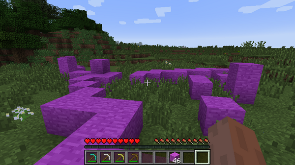
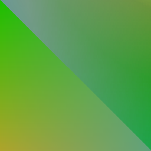

Modding
Modding has been a huge part of my career as a programmer and engineer. During my first year of University my goal was to create a Minecraft 1.6.2 mod with specifications set by my little brother (who is an avid Minecraft player). He told me what more he wanted to see in Minecraft and I tried my best to deliver!
The mod uses Forge and MCP and requires the Forge launcher to be launched. The source code can be access upon request. Below are images showing off some of the additions I made to the game.
Although the mod remains uncomplete, it does so in the spirit of Minecraft - a game that never ends! I work on this project every now and then, adding new things all the time. Throughout the project I've come to terms with how to work with a big code project - something I've found to be invaluable in my career as a software engineer. I've also established substantial knowledge how to optimize other people's code and how to implement efficient algorithms and data structures so that a game can run in real time without any deficiencies.
Future Goals:
- Custom Terrain Generation
- New, more difficult AI
- Stoy Mode support (Text bubbles, events etc...)
More Mod Details
I added gold trimmed armor to the game - an addition that not only modified the texture of the skin but also adds enchantments changing the effects of your attacks. It also makes the AI bow before you before attacking you. Small tibbits like these were the main purpose of the mod - to make it more enjoyable and to add quirky things that can possible excite the user.
Three examples of other textures added to the game. These are all additional blocks that can be found randomly in the world - generated using the algorithm provided by Minecraft. Figuring out spawning algorithms was fairly tricky but a very interesting process!
Another addition to the game - Redstone armor. JSON was used to create "material crafting". I also tried implementing dynamic recipe crafting - something that did not exist in Minecraft.
This of course included all the other craftable equipment.
Rainbow blocks have always been missing. These were added as both cloud blocks and craftable blocks with special properties such as jumping boosts and speed boosts.

There is also custom implementations of foliage around the world. The original Minecraft's foliage is rather lackluster and I decided to spice things up with more foliage variations.